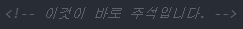

- CSS에서 주석 달기
- CSS 코드 최적화
- CSS 박스 모델에 대하여 알아보기
오늘의 첫 번째 목표는 CSS에서 주석을 달아보는 것입니다.
앞서 HTML에서는 다음과 같은 코드로 주석을 달아보았습니다.

이 코드를 'style' 태그 내에 그대로 적용해보세요.
주석이 달리지 않는 것을 확인하실 수 있습니다.
CSS에서 주석을 달기 위해선 다음과 같이 코드를 작성해주시면 됩니다.
아주 간단하죠?
다음 목표는 'CSS 코드 최적화'입니다.
아래와 같은 코드가 있다고 해봅시다.
보시다시피, 'h2' 선택자와 'a' 선택자의 선언이 모두 같습니다.
중복이 발생한 것이죠.
그리고 중복이 발생했다는 것은 코드가 쓸 데 없이 길다는 뜻이죠.
그래서 코드를 최적화시켜줄 필요가 있습니다.
우선 콤마(,)를 통해 두 선택자를 한 줄에 작성할 수 있습니다.
이렇게 말이죠.
그리고 선언도 같은 속성에 한해서 다음과 같이 최적화를 시켜줄 수 있습니다.
코드를 줄였는데도 결과가 같은 것을 확인하실 수 있습니다.
이렇게 중복이 최소화된 코드가 좋은 코드라고 할 수 있습니다.
오늘의 마지막 목표는 CSS 박스 모델에 대하여 알아보는 것입니다.
위 코드를 그대로 가져와서 설명하겠습니다.
'h2' 태그가 적용된 'HTML'이라는 텍스트의 테두리를 실선으로 적용해보니 빈 공간이 상당히 많음을 알 수 있습니다.
반면, 'a' 태그가 적용된 'CSS'라는 텍스트의 테두리를 실선으로 적용해보니 빈 공간이 없이 꽉 차있는 것을 알 수 있습니다.
이것이 의미하는 바는 각 태그 마다 가지고 있는 테두리 영역이 있다는 뜻입니다.
이는 각 태그가 가진 역할의 중요성에 기인한다고 보시면 됩니다.
'h' 태그는 페이지의 전체적인 내용을 함축하고 있는 제목을 의미합니다.
즉, 넓은 영역을 차지함으로써 자신이 그만큼 중요한 역할을 한다는 것을 알려주는 셈이죠.
반면, 'a' 태그는 단순히 'CSS'라는 텍스트에 하이퍼링크를 걸어주는 역할만 할 뿐, 있어도 그만 없어도 그만입니다.
즉, 넓은 영역을 차지할 필요가 없다는 뜻이죠.
모든 태그가 이런 식으로 넓거나 좁은 테두리 영역을 가지고 있습니다.
이때 넓은 영역을 차지하는 태그를 'Block level element', 좁은 영역을 차지하는 태그를 'inline element'라고 부릅니다.
이렇게 기본 설정이 되어 있는 것이고, 우리는 이 영역을 우리가 원하는 대로 바꿔줄 수 있습니다.
쉬운 설명을 위해 다음과 같은 코드로 설명하겠습니다.
참고로 'border-left/right/top/bottom' 등을 적용하여 원하는 테두리 부분의 굵기, 색상 등을 바꿀 수 있습니다.
가장 먼저 'width' 속성을 통해 테두리의 가로 길이를, 'height' 속성을 통해 테두리의 세로 길이를 조정해줄 수 있습니다.
다음과 같이 말이죠.
저는 'width' 속성만 이용했습니다.
그런 다음 'padding' 속성을 통해 텍스트와 테두리 사이의 거리를 조정해줄 수 있습니다.
다음과 같이 말이죠.
참고로 'padding-left/right/top/bottom' 등을 적용하여 원하는 구역만 거리를 조정해줄 수도 있습니다.
그 다음엔 'margin' 속성을 통해 테두리 근처의 여백 크기를 조정해줄 수도 있습니다.
다음과 같이 말이죠.
참고로 'margin-left/right/top/bottom' 등을 적용하여 원하는 구역의 여백 크기를 조정해줄 수도 있습니다.
이러한 것들을 '박스 모델(Box model)'이라 부릅니다.
이를 사진으로 정리하면 다음과 같습니다.
<사진 출처: w3schools>이렇게 오늘의 목표를 모두 달성했습니다.
그럼 내일도 화이팅!